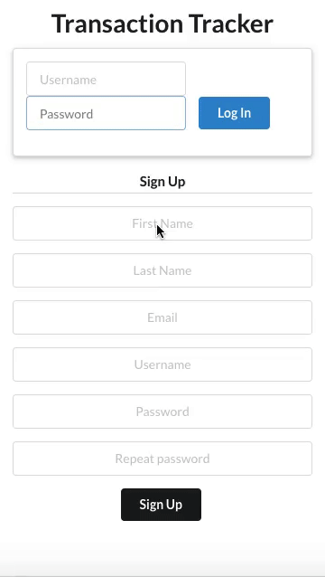

Transaction Tracker

Create transactions and keep track of your balance. You can also delete and update them and there are options for filtering. All is done instantantly so reloading is not necessary.
Tech: Front end: ReactJS, Semantic UI, react-cookies. Back end: Django, PostgreSQL, PL/pgSQL, django-cors-headers
Github: